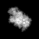
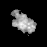

最小
最大
平均値
標準偏差
標準誤差
0
65.5929
5.45036
12.3043
0.153804
| オプション | 必須項目/選択項目 | 説明 | デフォルト |
|---|---|---|---|
| -i | 必須 | 入力ファイル設定 | NULL |
| -o | 必須 | 出力ファイル設定 | NULL |
| -eps | 選択 | モード１で設定 | 1e-15 |
| -m | 選択 | モード | 0 |
| -h | 選択 | ヘルプを表示 |
| モード | 説明 |
|---|---|
| 0 | 正方形 |
| 1 | 平方根 |
|
最小 |
0 |
最小 |
7.49574e-06 |
|  | 最小 |
7.49574e-06 |
|  | 最小 |
0 |
最小 |
0 |